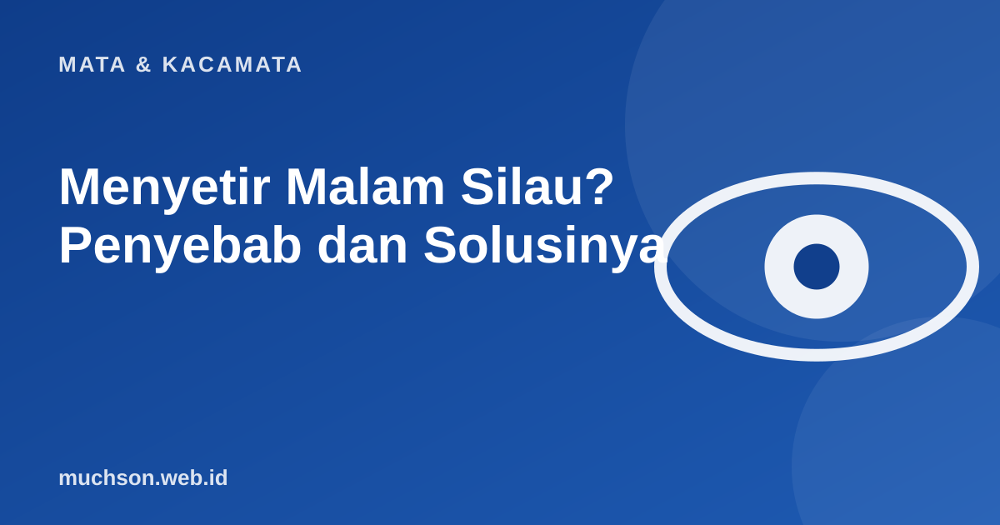

Beranda › Artikel › Mata & Kacamata
Mata & KacamataMenyetir Malam Silau? Penyebab dan Solusinya
Banyak pengemudi merasa pandangan jauh lebih buruk di malam hari: lampu depan memecah menjadi cahaya menyebar, dan jalan sulit terbaca. Penyebabnya beragam dan sebagian bisa diatasi dengan hal sederhana.

Mengapa malam hari lebih sulit?
Penyebab yang sering ditemukan
- Ukuran lensa tidak sesuai. Minus atau silinder yang kurang terkoreksi terasa lebih berat di malam hari.
- Lensa kotor atau tergores. Cahaya menyebar melalui goresan dan sidik jari.
- Tanpa lapisan anti-pantul. Lampu jalan dan lampu belakang kendaraan memantul di lensa.
- Kaca depan kotor. Lapisan debu di bagian dalam kaca memperparah silau.
- Mata kering atau kondisi mata lain, misalnya katarak awal.
Langkah yang bisa dicoba
Perhatikan
Jika silau malam hari bertambah parah dalam waktu singkat, atau disertai penglihatan kabur dan warna tampak pudar, periksakan ke dokter mata. Itu bisa tanda kondisi lain yang perlu penanganan.
Soal kacamata malam berlensa kuning
Kacamata "malam" berlensa kuning yang diiklankan untuk menyetir tidak terbukti jelas meningkatkan keselamatan, dan dapat mengurangi cahaya yang masuk ke mata. Lebih baik fokus pada ukuran yang tepat, lensa bersih, dan lapisan anti-pantul.
Tanya jawab
Apakah lensa anti-pantul membantu menyetir malam?
Ya, banyak pengguna merasakan lampu lebih nyaman karena pantulan di lensa berkurang. Hasilnya berbeda tiap orang.
Apakah mata minus lebih sulit menyetir malam?
Bila minus belum terkoreksi sempurna, ya. Dengan kacamata yang tepat, pengaruhnya jauh berkurang.
Apakah saya masih aman menyetir malam?
Jika Anda merasa tidak nyaman atau tidak aman, hindari menyetir malam dan periksakan mata. Keselamatan lebih penting.